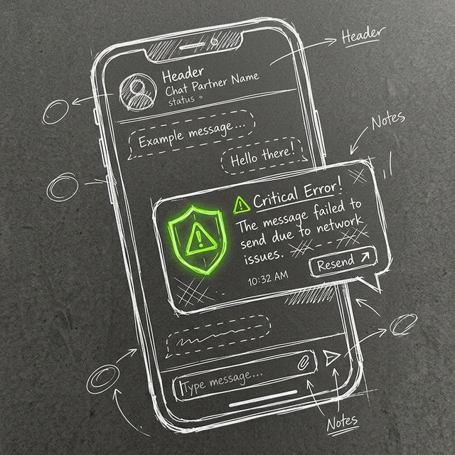

Ciberseguridad Inteligente (TFG)
Detección de Phishing y Anomalías de Red en tiempo real

El Problema y la Solución
Las pequeñas y medianas empresas (PYMEs) utilizan Telegram para su comunicación interna, exponiéndose a vectores de ataque sin contar con presupuesto para soluciones corporativas costosas. Este Trabajo de Fin de Grado resuelve este problema mediante un sistema autónomo y de bajo coste. Actúa como un centinela dual: analiza el tráfico de red de la empresa y evalúa los mensajes entrantes en los grupos de Telegram mediante Inteligencia Artificial. De esta forma, intercepta y bloquea intentos de phishing, spam e ingeniería social antes de que los empleados puedan interactuar con ellos.
Arquitectura en Raspberry Pi y Docker
El núcleo del proyecto debía ser portátil, privado y ejecutarse en entornos de bajos recursos. La solución completa está orquestada sobre una Raspberry Pi 5, encapsulando los servicios en contenedores Docker:
- IA Local (Ollama): Clasificación semántica de los mensajes mediante grandes modelos de lenguaje (LLMs) ejecutados de forma 100% local, garantizando que los datos sensibles de la empresa no salgan a servidores de terceros.
- Monitorización de Red (Suricata): Sistema de Detección de Intrusos (IDS) que escanea el tráfico de la red corporativa en busca de anomalías y patrones de ataque.
- Pipeline Asíncrono: Bot escrito en Python utilizando asyncio, permitiendo a la Raspberry procesar cientos de eventos de red y mensajes por segundo sin encolar procesos bloqueantes.
- MongoDB Local: Persistencia ultraligera de amenazas detectadas y perfiles atacantes para generar estadísticas e informes automáticos.
El Reto Técnico
El mayor desafío de esta arquitectura fue lograr un equilibrio perfecto entre el rendimiento del hardware (limitado a los recursos físicos de una Raspberry Pi 5) y la ejecución de modelos de Inteligencia Artificial locales junto con un analizador de red en tiempo real, ofreciendo protección empresarial a una fracción del coste tradicional.